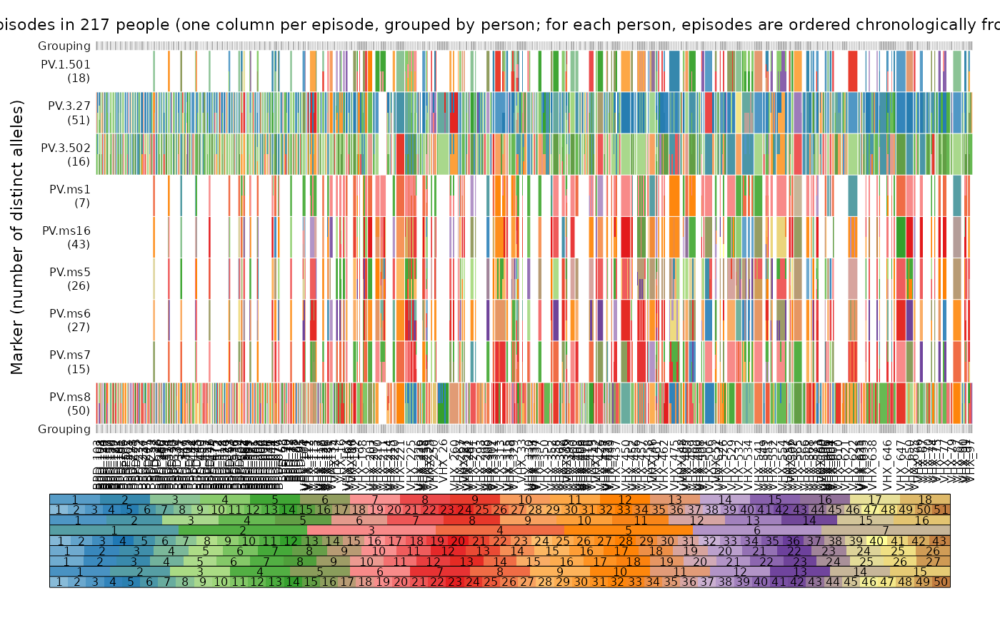
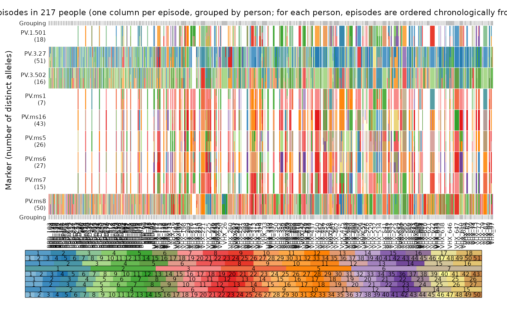

Plots allelic data as a grid of coloured rectangles.
Usage
plot_data(
ys,
fs = NULL,
person.vert = FALSE,
mar = c(1.5, 3.5, 1.5, 1),
gridlines = TRUE,
palette = RColorBrewer::brewer.pal(12, "Paired"),
marker.annotate = TRUE,
legend.lab = "Allele frequencies",
legend.line = 0.2,
legend.ylim = c(0.05, 0.2),
cex.maj = 0.7,
cex.min = 0.5,
cex.text = 0.5,
x.line = 0.2,
y.line = 2.5
)Arguments
- ys
Nested list of per-person, per-episode, per-marker allelic data; see Examples and
compute_posterior()for the expected per-person structure.- fs
A per-marker list of numeric vectors of allele frequencies. If
NULL(default), only the alleles present inysare shown in the the legend, with all per-marker alleles represented equally. Because the colour scheme is adaptive, the same allele may have different colours given differentys. Iffsis specified, all alleles infsfeature in the legend with areas proportional to allele frequencies, so that common alleles occupy larger areas than rarer alleles. Specifyfsto fix the allele colour scheme across plots of differentys.- person.vert
Logical. If
TRUE(default), person IDs are printed vertically; otherwise, they are printed horizontally.- mar
Vector of numbers of lines of margin for the main plot; see
marentry ofpar.- gridlines
Logical. If true (default), white grid lines separating people and markers are drawn.
- palette
Colour palette for alleles, see the Value section of
brewer.pal. Generally, colours are interpolated: if a marker hasdpossible alleles, then the colours used are the1/(d+1), ..., d/(d+1)quantiles of the palette to ensure that markers with different allele counts use different colours.- marker.annotate
Logical. If true (default), the names of the alleles are printed on top of their colours in the legend.
- legend.lab
Label for the axis of the legend. Defaults to "Allele frequencies". Set to
NAto omit the label; if so, consider adjustinglegend.ylimto use more plotting space.- legend.line
Distance (in character heights) from the colour bar to the legend label (defaults to
1.5).- legend.ylim
Vector specifying the y-coordinate limits of the legend in device coordinates (between 0 and 1). Defaults to c(0.05, 0.2).
- cex.maj
Numeric; font scaling of major axis labels.
- cex.min
Numeric; font scaling of minor axis labels.
- cex.text
Numeric; font scaling of the allele labels.
- x.line
Distance between top x-axis and x-axis label, defaults to 0.2.
- y.line
Distance between left y-axis and y-axis label, defaults to 2.5.
Details
This function plots alleles (colours), which are observed in different episodes (columns), on different markers (rows), with episodes grouped by person. Per-person episodes are plotted from left to right in chronological order. If multiple alleles are detected for a marker within an episode, the corresponding grid element is subdivided vertically into different colours.
By default, markers are ordered lexicographically. If fs is provided,
markers are ordered to match the order within fs.
The legend depicts the alleles for each marker in the same vertical order as
the main plot. The default colour scheme is adaptive, designed to
visually differentiate the alleles as clearly as possible by maximizing hue contrast within a qualitative palette.
Interpolation is used to make different colour palettes for markers with
different numbers of possible alleles. The names of the alleles are printed
on top of their colours if marker.annotate is set to TRUE.
Examples
# Plot example Plasmodium vivax data set
mar <- c(2, 3.5, 1.5, 1) # extra vertical margin for vertical person labels
plot_data(ys = ys_VHX_BPD, person.vert = TRUE, mar = mar, legend.lab = NA)
 plot_data(ys = ys_VHX_BPD, person.vert = TRUE, mar = mar, legend.lab = NA,
fs = fs_VHX_BPD)

plot_data(ys = ys_VHX_BPD, person.vert = TRUE, mar = mar, legend.lab = NA,
fs = fs_VHX_BPD, marker.annotate = FALSE)
# Demonstrating the adaptive nature of the colour scheme:
ys <- ys_VHX_BPD["VHX_52"] # A single person
plot_data(ys, fs = fs_VHX_BPD, marker.annotate = FALSE) # Colours match above
plot_data(ys = ys_VHX_BPD, person.vert = TRUE, mar = mar, legend.lab = NA,
fs = fs_VHX_BPD)

plot_data(ys = ys_VHX_BPD, person.vert = TRUE, mar = mar, legend.lab = NA,
fs = fs_VHX_BPD, marker.annotate = FALSE)
# Demonstrating the adaptive nature of the colour scheme:
ys <- ys_VHX_BPD["VHX_52"] # A single person
plot_data(ys, fs = fs_VHX_BPD, marker.annotate = FALSE) # Colours match above
 plot_data(ys) # Colours and the legend adapt to alleles detected in VHX_52
plot_data(ys) # Colours and the legend adapt to alleles detected in VHX_52